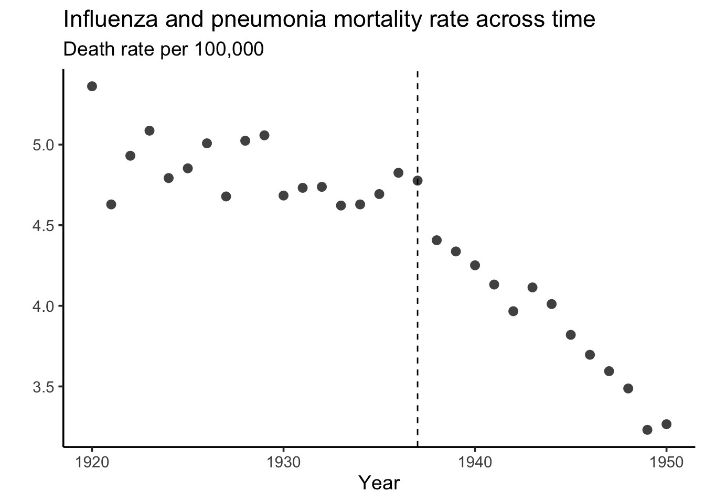
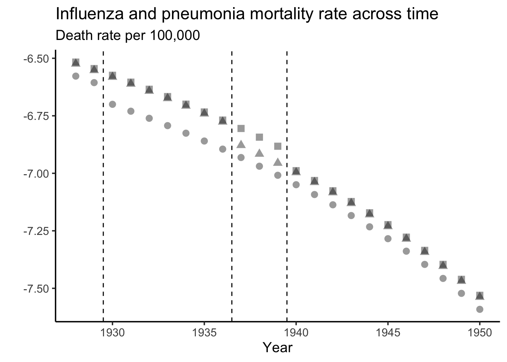

Loading required package: pacmanAntibiotics and mortality
Load packages
Load AEJ-Applied data
Let’s start by loading in the simplest data.
state_mortality = haven::read_dta("data/raw/113743-V1/AEJApp-20080229_Datasets/20080229_state_data.dta")
state_mortality = as.data.table(state_mortality)
national_mortality = haven::read_dta("data/raw/113743-V1/AEJApp-20080229_Datasets/20080229_national_data.dta")
national_mortality = as.data.table(national_mortality)
national_mortality[,one:=1]
national_mortality[,two:=2]Quick look at the data
flu_plot = ggplot(data = national_mortality, aes(x = year, y = log(influenza_pneumonia_total), shape = as.factor(one))) +
geom_point(size = 3, alpha = .75) +
theme_classic(base_size = 14) +
geom_vline(xintercept = 1937, linetype="dashed") +
labs(title = "Influenza and pneumonia mortality rate across time",
y = "",
subtitle = "Death rate per 100,000",
x = "Year") +
theme(legend.position = "none")
flu_plot
flu_plot +
geom_point(data = national_mortality, aes(x = year, y = log(tuberculosis_total), shape = as.factor(two)), size = 3, alpha = .75) +
theme_classic(base_size = 14) +
labs(title = "Mortality rate across time",
y = "",
subtitle = "Death rate per 100,000",
x = "Year") +
scale_shape_manual(name = "", values=c(16, 17), labels = c("Influenza/pneumonia", "Tuberculosis"), guide = 'legend') +
theme(legend.position = c(.8, 1))
Do simple diff in diff.
state_mortality_reshape = melt(state_mortality, id.vars = c("state_pc", "year"),
measure.vars = c("tb_rate", "infl_pneumonia_rate"))
state_mortality_reshape[, treated_disease := ifelse(variable == "tb_rate", 0, 1)]
state_mortality_reshape[, treated_time := ifelse(year >= 1937, 1, 0)]
state_mortality_reshape[, treated := treated_time*treated_disease]simple_did = fixest::feols(log(value) ~ treated | treated_disease + state_pc + year,
data = state_mortality_reshape)NOTE: 96 observations removed because of NA values (LHS: 96).etable(simple_did) simple_did
Dependent Var.: log(value)
treated -0.0632*** (2.37e-8)
Fixed-Effects: --------------------
treated_disease Yes
state_pc Yes
year Yes
_______________ ____________________
S.E.: Clustered by: treated_disease
Observations 2,696
R2 0.87465
Within R2 0.00505
---
Signif. codes: 0 '***' 0.001 '**' 0.01 '*' 0.05 '.' 0.1 ' ' 1simple_did$coeftable[1,1][1] -0.06316098Create fake treatment groups.
Add random variable to each state to get fake treated_year
state_mortality[, rand:=runif(1, 0, 1), by = state_pc]
state_mortality[, fake_year_treated := ifelse(rand < .33, 1930, ifelse(rand > .66, 1940, 1937)), by = state_pc]
state_mortality[, year_before_1937 := ifelse(year < 1937, year, 0)]
state_mortality[, year_after_1937 := ifelse(year >= 1937, year, 0)]Now for states that are fake treated not in 1937, we need fake data.
Get pre-treatment trend and s.d. from the flu trend
state_trend_inf = fixest::feols(log(infl_pneumonia_rate) ~ year | 1,
data = subset(state_mortality, year < 1937 & year > 1927))NOTE: 2 observations removed because of NA values (LHS: 2).etable(state_trend_inf) state_trend_inf
Dependent Var.: log(infl_pneumonia_rate)
Constant 47.03*** (8.902)
year -0.0278*** (0.0046)
_______________ ________________________
S.E. type IID
Observations 421
R2 0.08020
Adj. R2 0.07801
---
Signif. codes: 0 '***' 0.001 '**' 0.01 '*' 0.05 '.' 0.1 ' ' 1coef_inf = state_trend_inf$coeftable[2,1]
se_inf = state_trend_inf$coeftable[2,2]state_trend_tb = fixest::feols(log(tb_rate) ~ year | 1,
data = subset(state_mortality, year < 1937 & year > 1927))NOTE: 2 observations removed because of NA values (LHS: 2).etable(state_trend_tb) state_trend_tb
Dependent Var.: log(tb_rate)
Constant 96.01*** (16.70)
year -0.0535*** (0.0086)
_______________ ___________________
S.E. type IID
Observations 421
R2 0.08387
Adj. R2 0.08169
---
Signif. codes: 0 '***' 0.001 '**' 0.01 '*' 0.05 '.' 0.1 ' ' 1coef_tb = state_trend_tb$coeftable[2,1]
se_tb = state_trend_tb$coeftable[2,2]Create state-specific trend that
temp = subset(state_mortality, year == 1928)
temp = temp[,.(state_pc, infl_pneumonia_rate, tb_rate, fake_year_treated)]
temp2 = data.table(expand.grid(year=1928:1950, state_pc =unique(temp$state_pc)))
temp3 = merge(temp, temp2, by = "state_pc")
fake_data = melt(temp3, id.vars = c("state_pc", "year", "fake_year_treated"),
measure.vars = c("tb_rate", "infl_pneumonia_rate"))
fake_data[, treated_disease := ifelse(variable == "tb_rate", 0, 1)]
fake_data[, treated_time := ifelse(year >= fake_year_treated, 1, 0)]
fake_data[, treated := treated_time*treated_disease]
fake_data[, fake_value := ifelse(variable == "tb_rate", (value)*(1 + (year-1928)*coef_tb), (value)*(1 + (year-1928)*coef_inf))]
fake_data[, fake_value := ifelse(treated == 1, fake_value*(1 + simple_did$coeftable[1,1]), fake_value)]
fake_data[, fake_value := ifelse(fake_value < 0, 0, fake_value)]Collapse data to timing group
collapsed_fake_data = collap(fake_data, ~ treated_disease + year + fake_year_treated, fmean, cols = 9)flu_plot_fake = ggplot(data = subset(collapsed_fake_data, treated_disease == 1), aes(x = year, y = log(fake_value), shape = as.factor(fake_year_treated))) +
geom_point(size = 3, alpha = .4) +
theme_classic(base_size = 14) +
geom_vline(xintercept = 1936.5, linetype="dashed") +
geom_vline(xintercept = 1929.5, linetype="dashed") +
geom_vline(xintercept = 1939.5, linetype="dashed") +
labs(title = "Influenza and pneumonia mortality rate across time",
y = "",
subtitle = "Death rate per 100,000",
x = "Year") +
theme(legend.position = "none")
flu_plot_fake
run event study regression
state_mortality_reshape[, years_until_treat := ifelse(treated_disease == 0, -1, 1937 - year)]
es_real = fixest::feols(log(value) ~ i(years_until_treat, ref=-1) | treated_disease + state_pc + year,
data = state_mortality_reshape)NOTE: 96 observations removed because of NA values (LHS: 96).